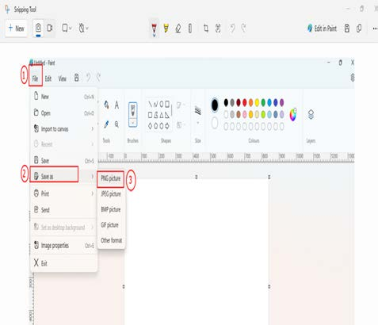
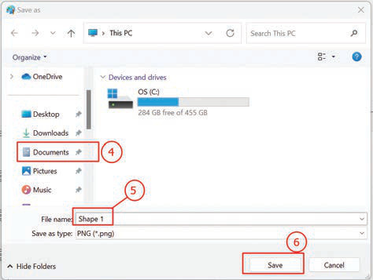

3.
Angalia au Chagua ‘PNG picture’. Pia, unaweza kuchagua ‘JPEG picture’ au ‘BMP picture’. Chunguza Kielelezo namba 9(a).

Maelezo ya programu fikivu ya Quorum: Bofya au tumia mishale Faili, chagua Save as, halafu chagua PNG picture. Hatua hizi zinaonyesha mwanzo wa kuhifadhi kazi yako.4.
Bofya au tumia mishale ‘Documents’ kama inavyoonekana katika Kielelezo namba 9(b).
5.
Andika jina la faili lako. Kwa mfano, andika ‘Shape 1’ kama ilivyo katika Kielelezo namba 9 (b).
6.
Bofya au tumia mishale ‘Save’.

Maelezo ya programu fikivu ya Quorum: Chagua Documents, andika jina la faili, kisha bofya au tumia mishale Save. Hii ni hatua ya mwisho ya kuhifadhi kazi yako.